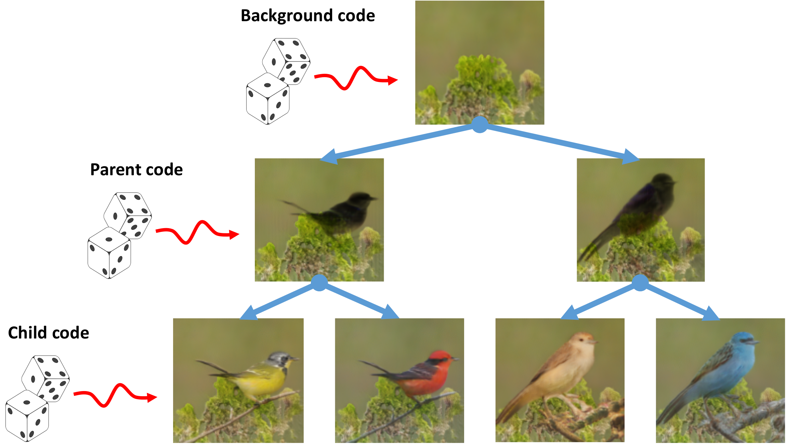

FineGAN: Unsupervised Hierarchical Disentanglement for Fine-Grained Object Generation and Discovery

FineGAN disentangles the background, object shape (parent), and object appearance (child) to hierarchically generate fine-grained objects, without any fine-grained annotations.
People
Abstract
We propose FineGAN, a novel unsupervised GAN framework, which disentangles the background, object shape, and object appearance to hierarchically generate images of fine-grained object categories. To disentangle the factors without any supervision, our key idea is to use information theory to associate each factor to a latent code, and to condition the relationships between the codes in a specific way to induce the desired hierarchy. Through extensive experiments, we show that FineGAN achieves the desired disentanglement to generate realistic and diverse images belonging to fine-grained classes of birds, dogs, and cars. Using FineGAN's automatically learned features, we also cluster real images as a first attempt at solving the novel problem of unsupervised fine-grained object category discovery.
Paper
|
|
Additional Materials
Approach
FineGAN architecture for hierarchical fine-grained image generation. The background stage, conditioned on random vector z and background code b, generates the background image B. The parent stage, conditioned on z and parent code p, uses B as a canvas to generate parent image P, which captures the shape of the object. The child stage, conditioned on c, uses P as a canvas to generate the final child image C with the object's appearance details stitched into the shape outline.
Demo video
Qualitative Results
FineGAN's stagewise image generation. Background stage generates a background which is retained over the child and parent stages. Parent stage generates a hollow image with only the object's shape, and child stage fills in the appearance to complete the image.
Varying p vs. c vs. z. Every three rows correspond to the same parent code p and each row has a different child code c. For the same parent, the object's shape remains consistent while the appearance changes with different child codes. For the same child, the appearance remains consistent. Each column has the same random vector z -- we see that it controls the object's pose and position.
Disentanglement of parent vs. child codes. Shape is retained over the column, appearance is retained over the row. Note that we keep background code b to be same across each column.
Acknowledgments
This work was supported in part by NSF CAREER IIS-1751206, IIS-1748387, AWS ML Research Award, Google Cloud Platform research credits program, and GPUs donated by NVIDIA.
Comments, questions to Krishna Kumar Singh